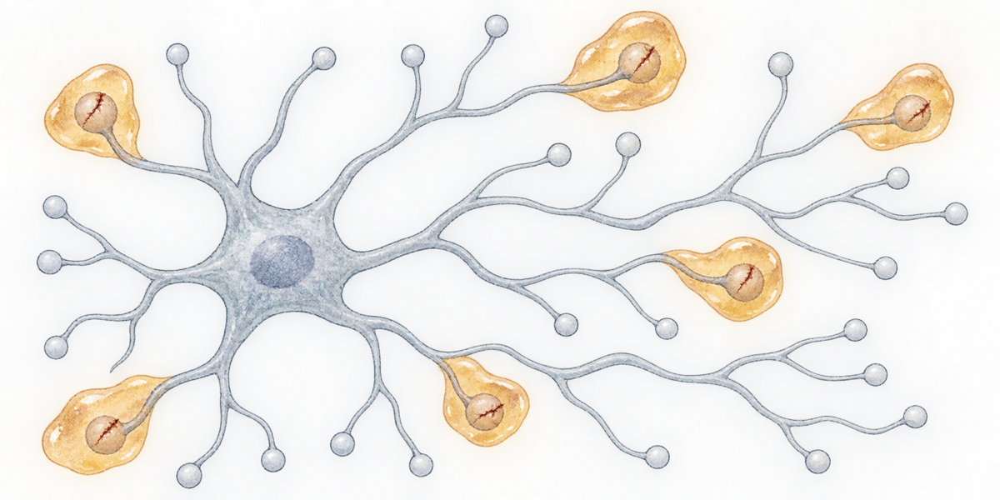

科学面
統1178年10月7日（朝刊） 科学 第11面
ヴァルデ賞に総木智行氏ら
元帝国出身の研究者、可塑性固定複合体の発見で
医学でもっとも大きな賞とされるヴァルデ賞の医学・生理学部門が六日発表され、元帝国出身の研究者、総木智行氏らに贈られることが決まった。受賞の対象となった論文は、昨年『神経科学会誌』に掲載された「長期の運動学習に伴う樹状突起上の可塑性固定複合体の形成と、干渉課題への適応の予測」である。
何年も跳び続けたハネネズミ 研究の主役は、寿命約三十年の小型哺乳類ハネネズミである。総木氏らは、決まった的に跳びつく動きを何年にもわたって訓練した。長く訓練した個体は若い個体より正確に跳ぶ。ところが、的をほんの少しずらす課題（研究者は干渉課題と呼ぶ）を与えると、若い個体が数日で慣れるのに対し、長く訓練した個体は何週間もかかった。一方で、跳びつきとは関係のない別の動きは、どちらの個体もふつうに覚えた。衰えではなく、覚えたことが邪魔をしている、というのが研究者の見立てである。
接点を守る塊 動きの微調整を担う回路の神経細胞を調べると、長く訓練した個体では一部の接点（シナプス）が書き換わらなくなっていた。その場所には特定のタンパク質が集まって安定した塊をつくっており、長年使われた接点ほど多かった。研究者らはこれを「可塑性固定複合体」と仮に呼んでいる。
学習前に分かる 総木氏らはさらに、神経細胞そのものに活動の履歴を記録させ、あとから読み出す方法を開発した。これにより、次の学習で苦労する個体を学習前に当てることができ、その的中率は年齢で予測するより高かった。塊を一時的に弱めると新しい動きを覚えやすくなったが、代わりに昔の動きが崩れた。守ることと直すことが表裏の関係にあることを示す結果だという。
人の脳にも 同じ塊は人の脳の組織でも見つかっている。ただし、その働きが確かめられたのは動物においてのみである。年を重ねるほど神経細胞にはエラーが溜まり、塊がそのエラーごと固定してしまうことを示す所見もあるという。総木氏らは、この研究は長く覚えることと新しく覚えることの関係を示したものであり、寿命や老いそのものについて何かを言うものではない、と繰り返し強調している。
